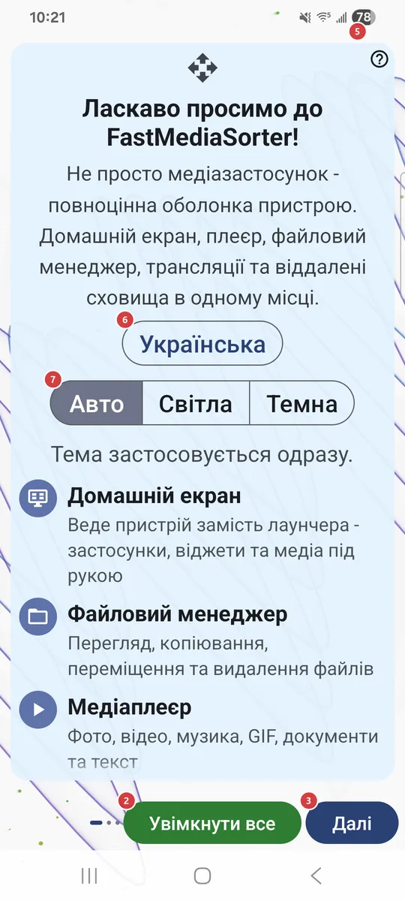
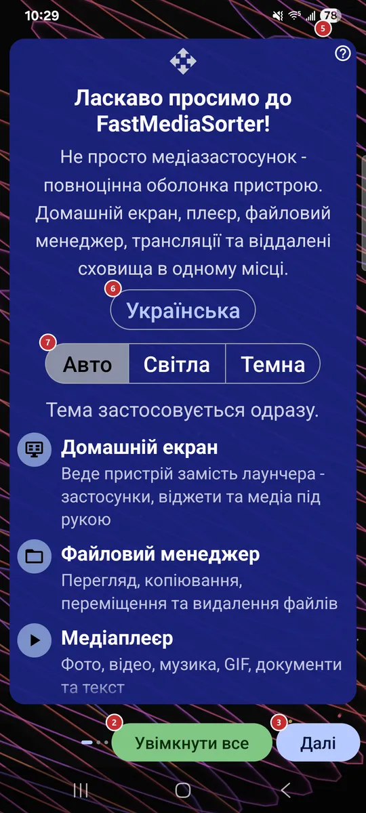

9Основне вікноОбирає, чим буде застосунок під час запуску: домашнім екраном пристрою, робочим столом усередині застосунку чи головним екраном.
Цей вибір є лише у версіях, де є домашній екран. Рекомендований варіант позначено.
Майстер привітання запускається під час першого старту й проводить вас через мову, тему, профіль пристрою, мережеві джерела, можливості, дозволи та плеєр за замовчуванням. Пізніше його можна відкрити знову з налаштувань.


На першій сторінці кнопка прихована: повертатися нікуди.
Кнопка є лише на першій сторінці. Спершу застосунок пояснює, що станеться, потім просить підтвердити профіль пристрою й лише після цього вмикає все, запитує дозволи та вибір застосунку за замовчуванням, а наприкінці завершує налаштування. Сторінки між ними пропускаються.
На останній сторінці замість неї з’являється «Готово».
Дозволи надаються на окремій сторінці, тож «Готово» більше нічого не питає. Кнопка з’являється на останній сторінці замість «Далі».
Ви дізнаєтеся, у якому порядку зазвичай проходять майстер і що робить кожен елемент.
Майстер перезавантажиться вибраною мовою. Мову можна змінити пізніше в налаштуваннях.
«Авто» стежить за пристроєм. Тема застосовується одразу, тож результат видно відразу.
Плитки є для особистого смартфона, планшета, ТВ-приставки, автомагнітоли, фоторамки, електронної книги та не тільки; найкращу позначено як рекомендовану. Профіль налаштовує одразу багато значень за замовчуванням. «Інший / Без змін» залишає налаштування як є.
Цей вибір є лише у версіях, де є домашній екран. Рекомендований варіант позначено.
Наприклад: спільна папка на ПК з Windows, NAS на кшталт Synology або QNAP, USB-диск у роутері.
Наприклад: хостинг через FTP, власний домашній сервер через SFTP, камера, яка вивантажує знімки в папку FTP.
Наприклад: увійдіть у Google Drive один раз і відкривайте резервну копію фотографій як звичайну папку. У версіях без підтримки хмари цей рядок прихований.
Якщо ваші медіа лежать на ПК з Windows, супутник у пару кліків ділиться цими папками з пристроєм, без налаштування сервера.
Зазирніть, коли треба переносити файли між власними пристроями.
Перемикач лише дозволяє режим, а вмикати його потрібно окремо для кожного ресурсу.
Відтворення музики й аудіо, сортування треків по папках.
Відтворення відео та сортування роликів вбудованим плеєром.
Відкриття PDF, тексту, електронних книг та офісних файлів.
Текст розпізнається й копіюється. Пакет розпізнавання завантажується просто на цій сторінці, хід завантаження видно під рядком, а функція вмикається після успішного завантаження.
Працює офлайн. Пакет перекладу завантажується просто на цій сторінці, а функція вмикається після успішного завантаження.
Відтворення інтернет-трансляцій та імпорт вбудованого каталогу. Каталог імпортується просто на цій сторінці, хід імпорту видно під рядком.
Вона збирається на вашому пристрої, автоматично нічого не надсилається.
Свайпи відкривають меню й роблять знімок екрана - звичайний або тихий. Спершу Android може запитати дозвіл «Поверх інших застосунків».
Установіть потрібні зараз або залиште на потім: той самий список є й у налаштуваннях.
Спершу з’являється один діалог Android для звичайних дозволів, а тоді особливі дозволи відкриваються окремими системними екранами, по одному. Увімкніть там перемикач і натисніть «Назад», щоб продовжити.
Стане в пригоді, коли хочеться самому переглянути чи змінити дозвіл або коли Android більше не показує власний запит.
У кожного рядка є пояснення, навіщо потрібен дозвіл, і своя кнопка: надати його або відкрити потрібні налаштування. Відмова - це просто ненаданий дозвіл; нічого не приховано.
Android покаже власне діалогове вікно: виберіть FastMediaSorter і натисніть «Завжди». Це не назавжди: вибір зберігається в налаштуваннях самого Android, і там його можна повернути.
Android покаже власне діалогове вікно: виберіть FastMediaSorter і натисніть «Завжди». Це не назавжди: вибір зберігається в налаштуваннях самого Android, і там його можна повернути.
Android покаже власне діалогове вікно: виберіть FastMediaSorter і натисніть «Завжди». Це не назавжди: вибір зберігається в налаштуваннях самого Android, і там його можна повернути.
Android покаже власне діалогове вікно: виберіть FastMediaSorter і натисніть «Завжди». Це не назавжди: вибір зберігається в налаштуваннях самого Android, і там його можна повернути.